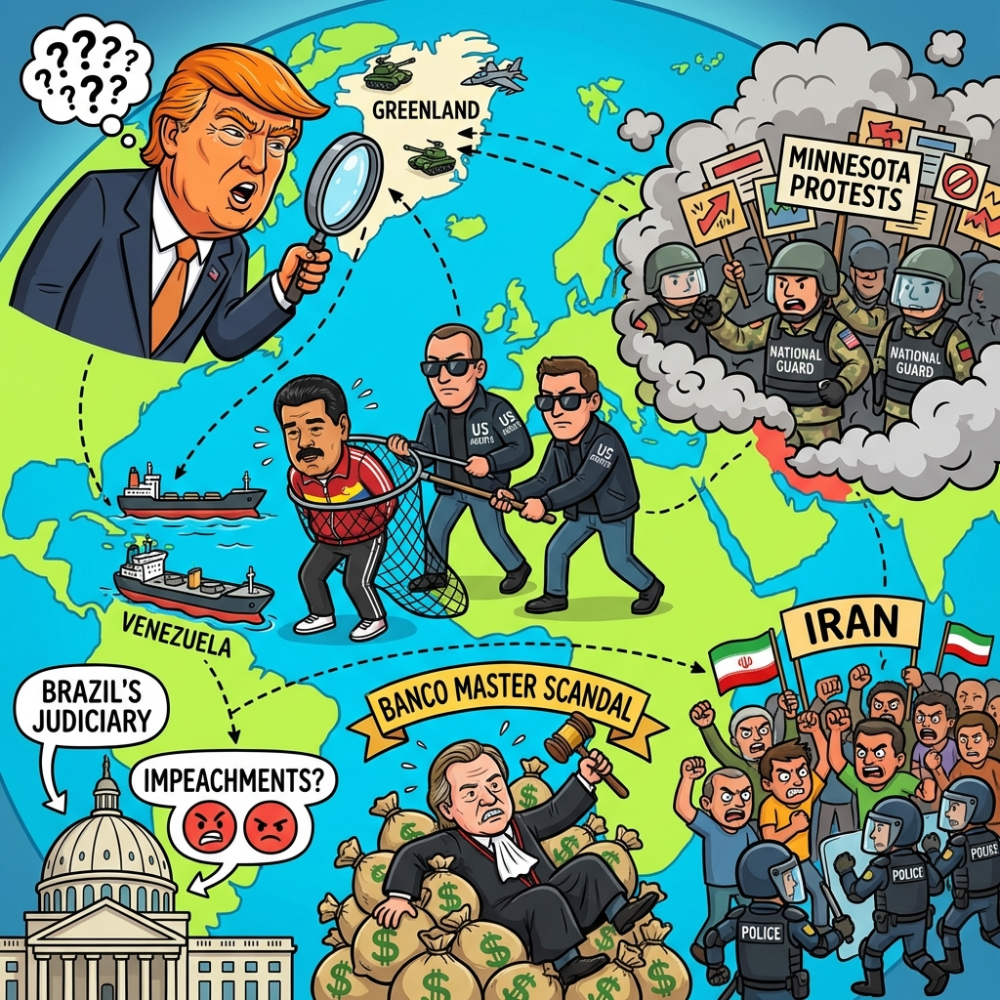

The Daily Globe: Trump's Aggressive Push for Greenland Control, Minnesota ICE Shooting and Anti-ICE Protests, and Banco Master Scandal Implicates STF's Toffoli
Published on 2026-01-17

World
- Trump's Aggressive Push for Greenland Control
Renewed threats to seize Greenland from Denmark ignite fears of U.S. military action and transatlantic rift with European allies and NATO.
- U.S. Intervention in Venezuela: Maduro Captured
U.S. raid in Caracas leads to custody of Nicolás Maduro; opposition leader Machado presents Nobel medal to Trump in symbolic gesture.
- Deadly ICE Shooting Sparks Minnesota Protests
Fatal shooting of woman by ICE agent during raids prompts massive protests; Trump threatens Insurrection Act.
- Iran Protests Repressed Amid U.S. Warnings
Crackdowns on anti-regime protests, internet blackouts; U.S. signals potential strikes at UN.
USA
- Minnesota ICE Shooting and Anti-ICE Protests
37-year-old killed by ICE agent; National Guard activated, Trump warns of Insurrection Act deployment.
- GOP Backlash Against Trump's Greenland Plan
Republicans criticize proposal as reckless; some suggest impeachment amid international tensions.
- Venezuela Leader Maduro in U.S. Custody
Post-military intervention, Maduro faces trial; ties to U.S. oil interests debated.
- Courts Block Trump Admin Voter Data Access
Federal judges halt efforts in blue states, fueling election integrity disputes.
Brazil
- Banco Master Scandal Implicates STF's Toffoli
Minister's family receives millions linked to bankrupt bank; allegations of investigation interference.
- 72 Impeachment Requests for STF Ministers
Calls against Moraes and Toffoli over bias, corruption, and overreach accumulate in Senate.
- Lula Comments on Elite Corruption Opportunities
'Never had such chance to reach upper floors of corruption,' sparking backlash.
- Influencer Ignites Xenophobia Debate on Northeast
Attack on regional voters as 'saving from fascism' fuels national division.
Topic Index
- greenland-takeover
- maduro-arrest
- minnesota-riots
- toffoli-scandal
- stf-impeachment
- brazil-corruption
- iran-protests
- venezuela-oil